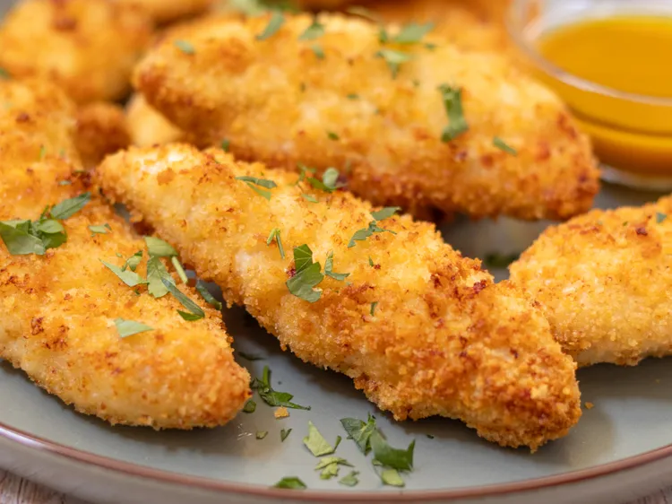

Chicken Tenders

Ingredients
- Cooking Spray
- Large egg
- Panko bread crumbs
- Canola Oil
- Chicken Tenders
Steps
- Gather ingredients.
- Preheat an air fryer to 350 degrees F (175 degrees C). Coat basket with cooking spray.
- Whisk egg in a small bowl. In another bowl, stir together panko and oil until loose and crumbly.
- Dip each chicken tender into egg, allowing excess to drip off.
Dip chicken in panko mixture to coat completely. Working in batches if needed.
- Arrange chicken in an even layer in the air fryer basket.
Cook until chicken is no longer pink in the center and the juices run clear, about 12 minutes.
An instant-read thermometer inserted into the center should read at least 165 degrees F (74 degrees C).
Home